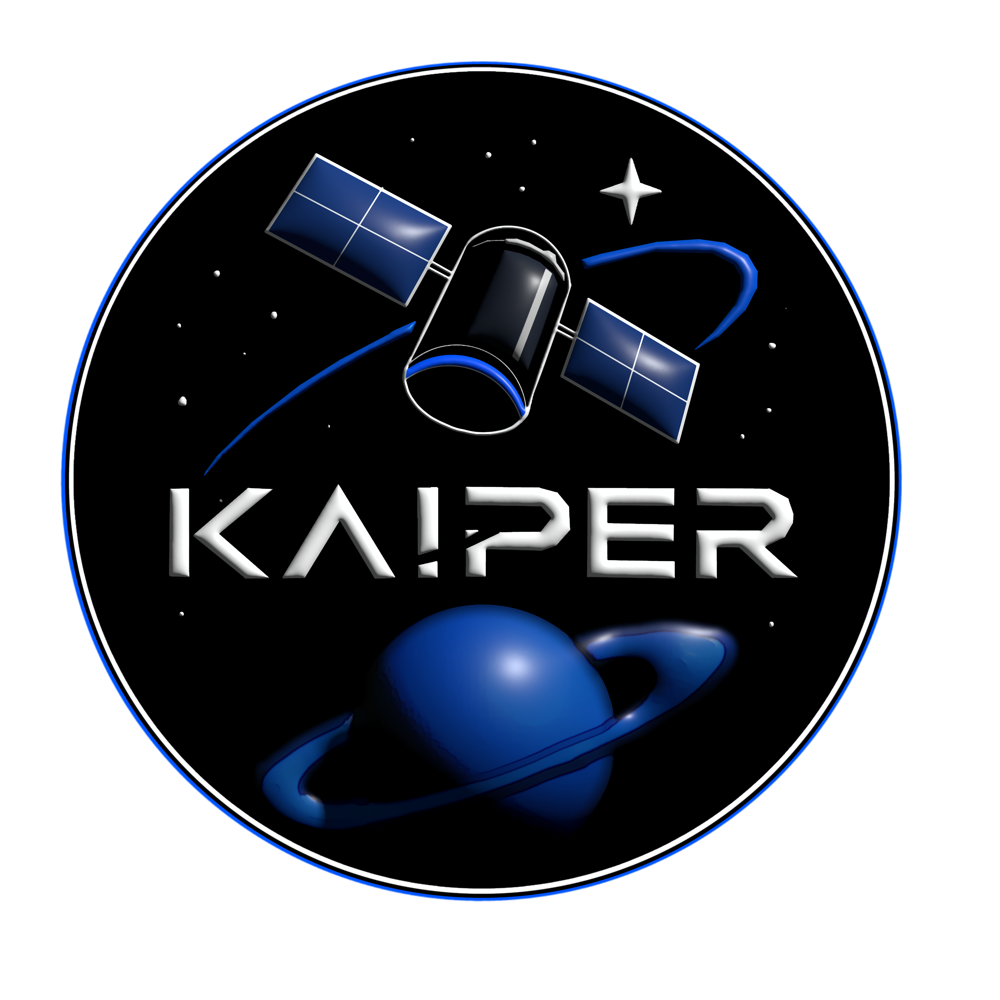

Could liquid water exist here?
Habitability index
Humidity, temperature, and UV radiation combined into a custom score that rates each stage of the descent.
Standard, well-tested sensors
KAIPERA high school CanSat team. We’re building a mini-satellite to explore, during its descent, whether an environment could support liquid water.
“Kai”: sea / ocean in Hawaiian, plus Kuiper Belt
Photos of our printed can and our sessions with our mentor.
Our mission: mapping an invisible ocean.
How a satellite the size of a soda can works.
The team and the story behind the name.
Tools for the mission, like our ground station.
Write to us or support the project.
CanSat is an educational program of the European Space Agency (ESA), run in Spain together with ESERO. Student teams build a mini-satellite the size of a soda can, with its own sensors, radio and parachute.
Fit everything inside a can-sized cylinder, 66 mm wide and 115 mm tall: sensors, a microcontroller, a radio and a parachute.
The CanSat is taken up high, usually around a kilometre, and released. It then falls back under its parachute.
While it descends it measures temperature and pressure (the primary mission) plus a second mission chosen by each team, and sends everything by radio to a ground station.
The best teams of each country go on to the European CanSat competition, organised by ESA.
Could liquid water exist here?
Humidity, temperature, and UV radiation combined into a custom score that rates each stage of the descent.
Standard, well-tested sensorsIs this environment stable?
An inertial sensor (IMU) tracks the stability of the descent, the same data that matters in real parachute and reentry system design.
Our safest betWould it be shielded from radiation?
We measure how background radiation changes with altitude, the same question astrobiologists ask about whether the ice on Kuiper Belt objects could shield a subsurface ocean.
The honest question markEach of the three sensors on its own is a fairly standard, well-tested piece of kit.
The turbulence data from the IMU is the part we’re most confident will simply work.
The radiation sensor is the one honest question mark.
Here is how Kaiper is coming together: our first 3D-printed can and the sessions with our mentor, who works for ESA.
Our new can, designed in three parts: shell, core and sled.
The outer skin of the can.
The blue lid with its openings.
The orange tray at the base.
4th-year ESO students at Escola Vedruna Tona, working on electronics, structure, programming, and data analysis.
Hi, I’m Matias.
Matias, Team Kaiper
Tools made for the CanSat mission.
Receives the CanSat temperature by radio, plots it live and saves it to an Excel file.
Works with Chrome or Edge. If the radio does not connect here, open the app in full screen.
Questions, ideas, or want to support Kaiper? Write to us.